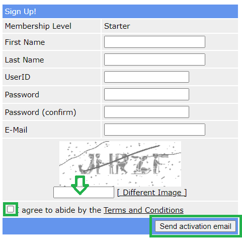

Warning
Nightscout developers advice: not a good idea.
Use a Dynamic DNS
Either because running a VPS, Northflank or simply because you’d like an alternate name to your Nightscout page, you can use either you own DNS name or free services like those below.
Warning
Adding a free DNS service to your Nightscout setup increases the possibility of unexpected outage. Paid DNS services are available at 1$ per month.
No-IP
No-IP provides one free dynamic DNS hostname.
Warning
Using No-IP for free requires you to confirm your hostname every month.
Sign up to No-IP. Do not create a
Hostnameyet.From the dashboard, in
Dynamic DNS,No-IP hostnamesclickCreate Hostname.
Invent your
Hostnameand select aDomainin theFree Domainlist. This will be the URL you will be able to browse from any computer to your Nightscout site.
If you’re using a VPS or you know the IP address of your current Nightscout, select
DNS Host (A)and enter it inIPv4 Address.
Else, if you only know your current Nightscout site name, select
DNS Alias (CNAME)and enter it inTarget.
Click
Create Hostnamebottom right.
{kind=link}
{kind=link}
{kind=link}
{kind=link}
You now can use this URL when accessing your Nightscout site, in any browser and also for your uploaders and followers.
Dynu
Sign up to Dynu.
Invent your
Hostname and select aTop Leveldomain in the list. This will be the URL you will be able to browse from any computer to your Nightscout site.
Click
Add.Replace the proposed IP address in
IPv4 Addressby your own Nightscout IP, (you can disable IPv6 features) and clickSave.
{kind=link}
{kind=link}
{kind=link}
You now can use this URL when accessing your Nightscout site, in any browser and also for your uploaders and followers.
FreeDNS
FreeDNS proposes thousands of free DNS names, with the issue that many are flagged as dangerous when you’ll want to browse them from your cellular or within public/private networks. You’ll find one that fits your needs but you might need several attempts.
Warning
Using FreeDNS for free requires you to login to confirm your account every six months.
Sign up to FreeDNS. Enter all required information and click
Send activation email.
Check your inbox (search Spam if you don’t receive the email) and click on the activation link.
Invent your host name in
Subdomain, select a domain name in the list (there are more than you can see) and put your Nightscout IP in theDestinationfield. Write the text in the image and clickSave.
Note: you might want to select a less popular name than those proposed by selecting Registry in the left menu (example below for us.to).
You now can use this URL when accessing your Nightscout site, in any browser and also for your uploaders and followers.
{kind=link}
{kind=link}
{kind=link}
{kind=link}
{kind=link}
{kind=link}